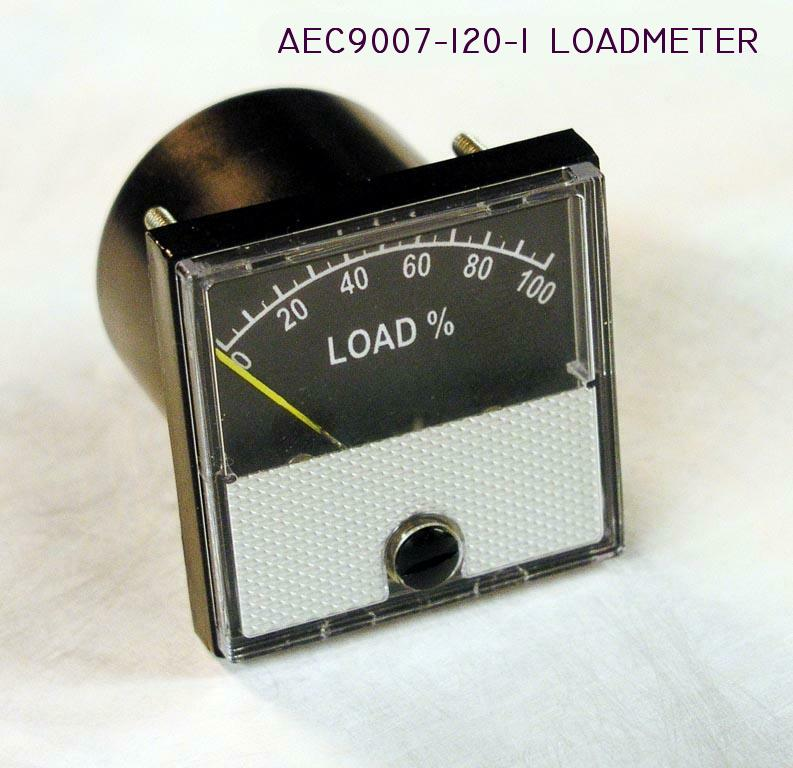
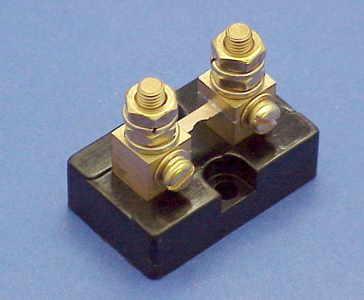

| Click Here for Larger Image
A few years ago we offered a combination low voltage warning product
that included an expanded scale analog voltmeter
and loadmeter in a single instrument. Unfortunately sources for
instruments I could buy at the time were not up to the quality we wanted
to sell and the product was discontinued. We're pleased to offer a smaller, precision loadmeter that features a case and movement by Tripplet . . . a very old name in quality instrumentation. This instrument comes with custom shunts individually calibrated for +/-2% accuracy. Dimensional drawings and installation diagrams may be downloaded for review by Clicking here.
|
 |
|  | Click here for larger image. To meet published accuracy specifications, this loadmeter must be used in combination with matched shunts. We stock the most requested sizes. Shunts may be custom-crafted for any size alternator. Contact us with your needs.
|
P/N AEC9007-120-1 Loadmeter (Black Face)
P/N AEC9007-110-10 10A Shunt for above . . .
P/N AEC9007-110-20 20A Shunt for above . . .
P/N AEC9007-110-40 40A Shunt for above . . .
P/N AEC9007-110-60 60A Shunt for above . . .
{kind=link}
{kind=link}
{kind=link}